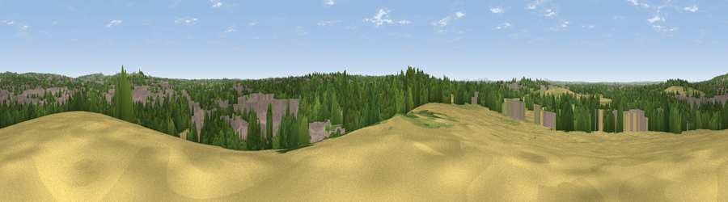

Viewpoint near Cheslyn Hay
#28706 in England · top 49% of its area beats it · near Cheslyn HayThe view, rendered

A 360° render of this exact spot computed from the terrain model, tree cover and land cover — summer colours, afternoon light, calibrated against photographs of famous viewpoints. Real trees, hedges and buildings will differ in detail.
The panorama
Grey silhouette: terrain skyline in each direction (720 bearings, Earth curvature and refraction included). Dashed green: skyline with trees (+15 m) and buildings (+8 m) as obstacles. Blue strip: how far the ground is visible on each bearing.
Where the view opens
Wedge length = distance to the farthest visible ground on that bearing (vegetation-aware). Rings at 10, 25 and 50 km.
What fills the view
34% woodland · 34% built-up · 16% cropland · 15% grassland ·
Angular shares of the visible panorama (visual magnitude), not map area. Landscape diversity 0.60 (0–1 Shannon).
Key numbers
More beautiful places nearby
The staircase of upgrades: each row has a higher view potential than everything closer. Driving times are estimates from straight-line distance, calibrated against real road routing — check an actual route before setting out.
| Place | Direction | Drive | Score |
|---|---|---|---|
| Viewpoint near Shareshill | W · 2 km | ~6 min | 57.0 |
| Viewpoint near Cannock | ENE · 3 km | ~6 min | 59.0 |
| Viewpoint near Huntington | N · 5 km | ~11 min | 60.2 |
| Wimblebury Hill | ENE · 6 km | ~14 min | 62.0 |
| Viewpoint near Streetly | SE · 14 km | ~25 min | 69.5 |
| Viewpoint near Priorslee Village | W · 24 km | ~40 min | 70.4 |
| Viewpoint near Clent | S · 28 km | ~44 min | 73.8 |
| Viewpoint near Clent | S · 28 km | ~45 min | 74.3 |
52.67127, -2.04691 · source: screening · position refined by local search. Computed location — check access rights before visiting.